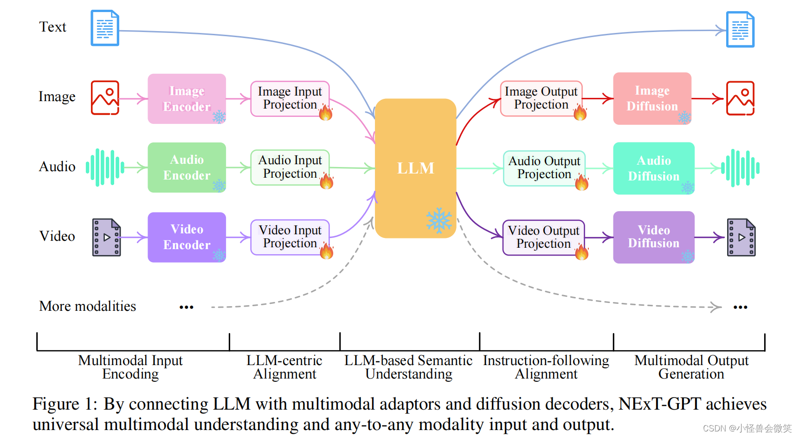
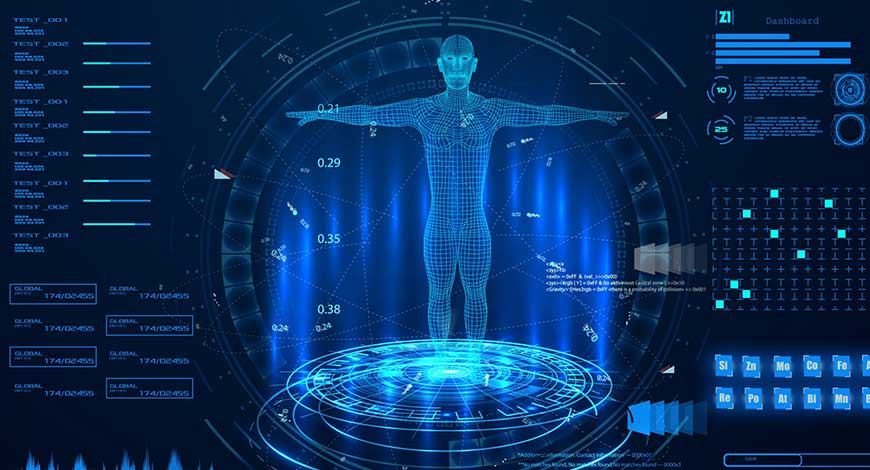

对话系统
对话系统（Dialogue System，简称DS），是使人与机器可以通过自然语言进行对话交互的系统。DS除了用准确、简洁的自然语言回答用户用自然语言提出的问题外，更注重与人的交互、对人意图的理解、对对话氛围的感知，以及回答的多样性和个性化。如今医疗领域的三大社会痛点：就医流程复杂、就医体验差和医患关系紧张。而对话系统因其方便快捷的交互形式，使得其非常适合解决慢病管理领域长期存在的低效率问题。从社会角度出发，糖尿病健康管理对话系统能实时、快速地解答患者咨询的关于疾病、症状、用药、饮食、运动、减肥等领域的问题，降低了患者的时间成本以及医院、社会方面的运营成本，并且还极大程度地提升患者的体验，让患者更加便捷地用自然语言与系统进行交互，指导并帮助患者，使得对话系统成为了患者寻求帮助的一个新颖的交互窗口。从理论角度出发，本研究结合对话系统的技术特点，提出糖尿病健康管理对话系统决策方法，为糖尿病健康管理对话系统的慢病管理服务生成提供方法支持；提出糖尿病健康管理对话系统服务传递模式，丰富AI使能的慢病管理服务模式和交互模式；提出糖尿病健康管理对话系统自我管理模式，探索对话系统对自我管理的影响机制，为对话系统在慢病管理的应用提供理论支持。在实践方面，本研究探索大数据、人工智能技术实现糖尿病管理对话系统决策支持的可行性和实效，为基于对话系统的慢病管理应用提供技术借鉴；为提升糖尿病健康管理对话系统服务传递效果、优化交互模式提供实践指导；探究基于对话系统的糖尿病患者自我管理影响因素和机制，为设计和优化这一新型慢病管理模式下自我管理提供理论指导和实践建议。
多模态大模型
多模态大模型是一种能够处理多种类型数据（如文本、图像、音频等）的人工智能模型。它通过深度学习技术，将不同模态的数据进行融合和处理，从而实现更准确、更全面的分析和理解。
这种模型的优势在于能够处理复杂的任务，如图像字幕生成、语音识别、多语言翻译等。它通过学习多种模态的数据特征，能够更好地理解世界，提高任务的完成质量。
多模态大模型的研究和发展是人工智能领域的一个重要方向，它将有助于推动人工智能技术的应用和发展，为人们的生活和工作带来更多便利。

智能健康
智能健康是指利用现代信息技术，特别是人工智能技术，来提高医疗保健的效率和质量。它涉及到多个方面，包括但不限于智能诊断、个性化治疗、健康管理、药物研发和医疗数据分析。
智能健康的核心在于利用大数据、机器学习、深度学习等人工智能技术来分析医疗数据，从而辅助医生进行更准确的诊断，为患者提供个性化的治疗方案，以及实时监控和管理患者的健康状况。
随着技术的不断进步，智能健康有望在未来实现更高效、更精准的医疗服务，降低医疗成本，提高患者的满意度和生活质量。同时，它也有助于推动医疗资源的均衡分配，尤其是在偏远地区和资源匮乏的地区，能够通过智能健康技术获得更好的医疗服务。
